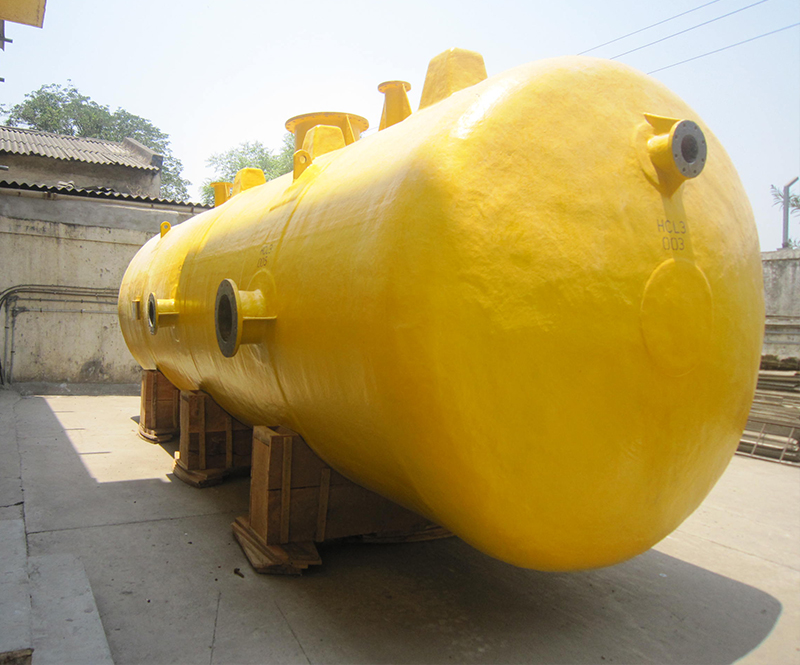

Mixer Settlers

Overview
Solvent extraction or LLE (liquid-liquid extraction) is a process of separating compounds or metal complexes, based on their relative solubility in two different immiscible liquids like water and organic compounds. Solvent extraction is a very common and important process for separation and purification of many elements.
It has evolved over recent years which has resulted in new extraction processes and equipment increasing its application in many extraction units including metal extraction plants. Among these, the Mixer-Settler is prevalent due to its efficiency and reliability.
Characteristics & Features
- High stage efficiency (> 95%)
- Handles wide solvent to feed ratio
- High capacity and reliable scale-up
- Flexible to add/remove stages
Materials of Construction
FRP / GRP using isophthalic or bisphenol vinyl ester resins; dual-laminate using thermoplastics where required.
The product image is stored locally with the prototype and can be replaced with a dedicated mixer-settler photograph later.